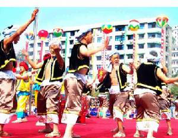
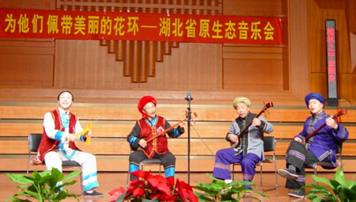
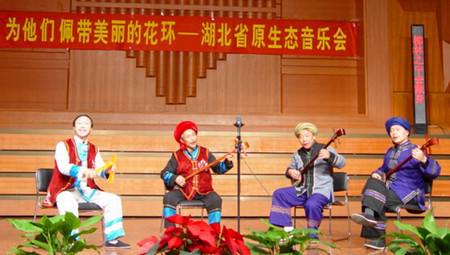
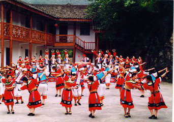
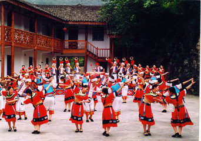

历史文化
撒叶儿嗬


撒叶儿嗬是一种传统祭祀歌舞，乡亲们聚在孝家堂屋里的亡者灵柩前，男人载歌载舞，女人们穿戴着鲜亮服饰围观助兴，这种活动往往通宵达旦的举行。土家族认为人的生死有如四季变化，是自然而然的，享尽天年的老人辞世是顺应自然规律，值得庆贺。如果有老人去世，他们认为这是升天，叫白喜事，因此，不论死者是男是女，也不论死者名望高低，乡邻都要为死者打一夜丧鼓，以此怀念故人，安慰生者。人死众家丧，大伙儿都拢场，一打丧鼓二帮忙。土家人就这样用绝妙的歌腔舞态表达自己旷达的生死观。 撒叶儿嗬表现的内容主要有先民图腾、渔猎活动、农事生产、爱情生活、历史事件等，反映了人们对自己民族的历史的回忆及其长期形成的道德意识与是非观念。因土家族世代生活在溪峒纵横、崇山峻岭的山区，长期越涧过水、攀岩背负的生活习惯和劳动方式，形成了撒叶儿嗬独特的表现风格。
跳舞时先由歌师击鼓叫歌，舞者随鼓声应节起舞，舞蹈形式有24种套路，其动律特点是顺拐、屈膝、悠颤，出现6/8拍子带切分音的节奏律动。不管用什么节奏，不论多少人参与，舞蹈动作都十分对称，动作姿态一般都是哈腰、曲膝、八字步、摆胯、绕手，身体按节奏上下或左右颤动，手、脚、胯向同一方向呈顺边运动。
撒叶儿嗬舞步舞姿，刚劲有力，粗犷豪放。（《夷水古风》）按摹拟动作形象来分有凤凰展翅、犀牛望月、牛擦痒、狗吃月、燕子含泥、猛虎下山……最为壮观的是猛虎下山，舞者跳着跳着，忽然鼓点一变，对舞中的一人猛然跳跃腾空，一掀舞伴，两人躬身逼视，忽见击掌撞肘，前纵后跃，一跃一扑，模仿猛虎扑食的动作，口里还发出一阵阵啸声，最后一人被另一人挽着从头顶上后空翻跃过来，动作形象逼真。撒叶儿嗬动作调度较有规律。以反胴体贯穿始终，即：顺边下沉、晃悠、颤动。舞者身体在收缩与伸展、推进与拽拉、挺身与曲身、摇摆与晃动、震颤与抖动中展现出美来。第一种调度是，二人面对绕手，再向对方右侧上步，交换位置；第二种调度是，二人面对绕手，再向对方右侧上步，然后向左转圈回到自己原来位置；第三种调度是，二人左脚起步，第一步面对面，第二步背对背，第三步面对面，第四步背对背，然后向左转半圈，成为面对面，这种动作调度在核心舞段中出现较多其动作为舞者脚掌紧紧贴地，第一拍上步，二三拍颤动，两腿交错行进，有点像迪斯科，但其中双肩相靠、曲膝、弯腰、双手抱头、身体抖动部分，又有点像太空舞，很是好看。 撒叶儿嗬突出一个虎字，即：模仿老虎相互进退、撞击、跳跃、旋转。舞者身体在腾空中展现出虎威来。其基本动作为：双方搂肩对跳，你进腿他躬身，一方借势屁股一蹶，另一方乘势腾入空中，一跃一跳，很像饿虎扑食，老虎之威表现得活灵活现。撒叶儿嗬曲牌众多，结构复杂。
跳丧中脚的动作很丰富，乐园、榔坪等地区，习惯将左脚或右脚提起后，向另一只脚前方点一下再行走，资丘、桃山等地区，习惯将左腿吸起，作为起步的动作，渔峡口的双龙等地区，行走的第一拍，左脚向左右占摆一次，乐园、榔坪、火烧坪地区，行走时，身体显得松弛，小平步行走，民间艺人称为碎米子步。行走时，像踩在棉花上，随着音乐节奏颤动，给人以轻盈之感。西南地区，即资丘、桃山、麻池、渔峡口等地，每一行步脚掌紧紧抓地，民间艺人称为虎步，步伐迈的较大，显得稳重有力。



舞蹈音乐和唱腔有高腔或平腔之分，旋律节奏有2／4、4／4、6／8，以6／8为主。撒叶儿嗬的配乐只有大鼓一种。舞时，一人持一对木锤击鼓而歌，二人到堂中踏鼓、接歌、起舞，有时四人交替和穿插对舞，叫作走四门 ……大鼓既是伴奏乐器，又是歌师（击鼓者）指挥舞蹈、交换曲牌、调整情绪的工具。一鼓多用，敲击鼓心、鼓边、鼓邦发现不同音响。这就使人联想到击鼓进军的古战场景象。舞蹈时，掌鼓者通过鼓心、鼓边、鼓沿击出多种富于变化的鼓点，边击鼓边领歌，舞蹈者则脚跟鼓点鼓跟脚，和歌而舞，随着击鼓者的指挥，不时改变舞姿和节奏。激越时似山风呼啸，舒缓时如轻舟荡漾，有张有弛，古老质朴。撒叶儿嗬在土家族民间世代相袭，盛传不衰，浸透着土家人的聪明才智和深厚的民族感情。
撒叶儿嗬歌词大都是为亡者歌功颂德，并用子孙成就告慰亡灵；安慰孝家节哀顺变，继承先人遗志，再创辉煌。出唱一些英雄事迹；尤其是武将的战绩，如《杨家将》、《薛仁贵征东》等。演唱分高腔和平腔二种。高腔刚劲高亢，如声振林木；平腔舒缓流畅，似潺潺流水。其主旋律均在于教人化悲痛为力量，振作精神，继续前进。
撒叶儿嗬的观众不分男女老幼，但跳舞的演员都有传统的铁规：男跳女不跳。俗话说：女人跳丧，家破人亡。跳起来手舞足蹈，亦歌亦舞，体力消耗很大，如遇热天，还打起赤膊跳，挥汗如雨。撒叶儿嗬舞姿刚劲，歌声激越，舞者为男性猛士，加之战鼓伴奏，具备了战事的重要因素，表演起来，具有浓浓的火药味，说它由战舞演变而来，不仅有道理，而且有根据。《山海经》记巴人干舞，用兵以禳。这种舞史称为武舞。约在四千年前有之。《华阳国志・巴志》记：巴师勇锐，歌舞以凌殷人，（殷人）前陡倒戈，故世称之，武王伐纣，前歌后舞也。临丧祭祀，有歌有舞，这就是早期的撒叶儿嗬。


 

南曲
长阳南曲是流行于中国湖北省西南部长阳土家族自治县清江流域的一种曲艺。它曲高调婉转细腻、优美抒情、唱腔曲牌丰富，被誉为“郁香的山花”。
作为土家族的聚居地，长阳地处湖北宜昌，这里是中国古代两种传统文化“巴文化”与“楚文化”的交汇点，宜昌民间曲艺充分体现了这两种文化的融合”。长阳土家族自治县民族民间传统文化保护中心的戴曾群介绍说，长阳南曲是在明清俗曲的基础上产生和发展而来的，在清朝雍正乾隆年间传入土家族地区，是土家族文化和汉族文化融合的结晶。他说：“长阳南曲是属于整个湖北地区一个比较古老的地方曲种，根据艺人的传承谱系，他的道具、伴奏乐器来推算，大概是在清朝，离现在大概是两百多年，传入长阳。”
由于没有专业艺人，现在长阳南曲主要靠民间流传、朋友相教，或子从父学、世代相袭。至今土家山寨的人们逢年过节、娶媳嫁女、生日祝寿以及劳动之余，往往相邀聚会，你弹他唱，自唱自乐。在素称“南曲之乡”的长阳资丘，每每夜深人静，但听得吊脚楼上三弦咚咚，曲声萦回，面对山乡夜色，令人心旷神怡。
长阳南曲属于曲艺，因而能够将音乐和文词很好地结合起来，而这相辅相成，造就了长阳南曲唱词文雅、曲调优美、自弹自唱这三大特点，下面这首长阳南曲的启蒙段子“春去夏来”形象的说明了它的这一特征：“春去夏来，不觉又是秋。柳林河下一小舟，渔翁撒网站立在船头。”
在日常的生活中，长阳南曲的表演形式主要是坐唱，多为一人自弹自唱，也可多人自弹自唱或一人弹奏，一人边打简板边唱，根据曲目内容还可对唱。传统曲目中少有道白，也没有动作表演。其音乐具有刚少柔多，长于叙事的特点：“钓得鲜鱼沽美酒，一无烦恼二无忧。清风不用银钱买，月在江中任自由。闲来简板敲明月，醉后渔歌云春秋。”
这首南曲中唱出了土家山寨的村民，面对青山绿水，悠闲快乐心情。短短几句典雅的文辞，韵味悠长，勾勒出清江渔民怡然自得的生活情景。简单的生活中饱含哲思，直白的叙述中深蕴智慧，更有“南腔北调任咱唱，就是那王孙公子不能得够”的潇洒。长阳南曲在土家人民生活中的重要地位，带给他们的无限快乐，由此可见一斑。
长阳南曲的音乐表现力也非常强，风格多样，有轻松愉快的，有活泼风趣的，也有热情激烈的，可以说能悲能欢，善柔能刚。这其中，伴奏乐器起到了重要作用。小三弦是长阳南曲的主要伴奏乐器，其在弹奏旋律时音域高低变化自由，可奏出各种滑音。同时，由于三弦的音色具有高音坚实清脆、中音明亮圆润、低音丰满浑厚的特点，这无疑给长阳南曲增添了更多浓郁的色彩。长阳南曲音乐“悲秋”片段：“梧桐叶落金风送，丹桂飘香海棠红，是谁家，夜静更深把瑶琴抚弄，猛听得，檐前铁马响叮咚。”
这一段“悲秋”，是长阳南曲的传统剧目，它集中体现出长阳南曲在节奏上的一唱三叹、悠远绵长，精美讲究的文辞、细腻的情思使得长阳南曲“雅”的一面表现的异常明显。此外，在曲目内容上，长阳南曲既有全国流行的一些共通的题材，如取材小说及戏本《三国演义》、《水浒》、《西厢记》等当中的章目，同时也有表现土家民族风情的特殊题材，如《胖大娘过江》、《螳螂讨亲》等。
目前，长阳南曲作为民间流传的艺术品种，在当地作为非物质文化遗产，得到了很好的保护和传承，长阳南曲艺人如今已递增到100多人，这一古老的艺术品种，正在焕发新的生命之光。
巴山舞


简介
发展历程
表演形式
传承价值
现状
 
